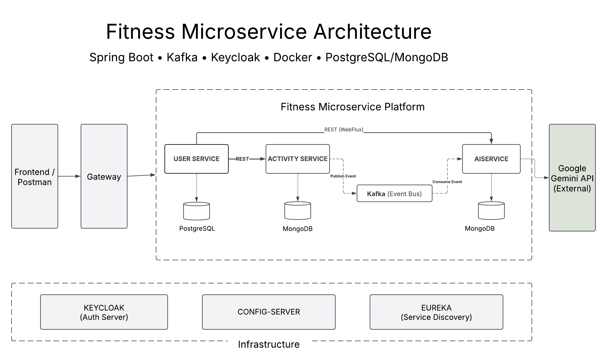

Backend Engineer
Building Scalable Distributed Systems
Java · Spring Boot · Distributed Systems
I design and build modular backend systems with clear service boundaries, centralized authentication, and scalable communication patterns. My focus is on writing production-ready code that scales without architectural rewrites.
Professional Experience
Senior Software Engineer
2017 – 2019Capgemini
- Designed and maintained backend business logic modules for enterprise banking applications operating in high-availability production environments supporting continuous financial transaction processing.
- Delivered secure and reliable backend features within Agile Scrum teams, participating in sprint planning, peer code reviews, and integration testing cycles.
- Diagnosed and resolved high-priority production incidents, minimizing service disruption and improving system reliability for critical financial workflows.
- Collaborated with QA engineers and business analysts to implement complex financial workflows across distributed system components, ensuring correctness and operational stability.
Operations & Systems Management
2019 – 2023Arian Drugs & Surgicals
- Managed end-to-end inventory and procurement operations for a regional medical supply distribution business, overseeing stock planning, vendor coordination, and order fulfillment workflows.
- Optimized inventory tracking and demand planning processes, reducing stock inconsistencies and improving operational efficiency across product categories.
- Coordinated vendor negotiations and pricing strategies while ensuring regulatory and documentation compliance for medical supplies.
- Introduced structured digital record-keeping and process standardization, improving visibility into sales, procurement cycles, and inventory turnover.
Selected Work
Focused on backend system design, distributed architecture, and production-ready APIs.
Fitness Microservices Platform
Backend Architecture · Distributed Systems
Architected a distributed backend system composed of 3 independently deployable services (User, Activity, AI). Reduced inter-service coupling by introducing asynchronous Kafka-based event communication and centralized authentication at the gateway layer. Designed for horizontal scalability and independent service deployment.
System Design
- Decomposed monolith into domain-driven microservices.
- Introduced API Gateway for centralized routing and auth enforcement.
- Integrated Eureka for dynamic service discovery.
Communication
- Synchronous REST for user-facing workflows.
- Asynchronous Kafka events to reduce inter-service coupling.
Security
- JWT authentication with Keycloak identity provider.
- Token validation enforced at gateway layer.
Deployment
- Docker containerization for independent scaling.
- Environment-based configuration (local & EC2).
Emphasized clear service boundaries, event-driven communication, and infrastructure abstraction to enable independent scaling and maintainability.
System Architecture Overview
High-level service interaction and infrastructure layout.
ADS E-commerce Platform
Backend API Design · Relational Modeling
Designed and implemented a modular Spring Boot backend supporting product, user, and order domains with JWT-based authentication and transactional integrity. Optimized relational schema design and indexing strategy to improve query efficiency.
Technical Skills
Backend-focused technologies used to design scalable distributed systems and production-ready APIs.
Backend & Architecture
Spring Boot · REST APIs · Microservices · JWT · OAuth2 · WebFlux · Event-Driven Architecture · System Design
Data & Messaging
PostgreSQL · MongoDB · Kafka · Transactions · Indexing · Schema Design
DevOps & Infrastructure
Docker · Git · Jenkins · AWS EC2 · CI/CD · Eureka · API Gateway · Keycloak
Languages
Java · Python · C++ · JavaScript
Education
Master of Applied Computer Science (Co-op)
GPA: 3.97 / 4.30
Graduate Diploma in Computer Science
GPA: 3.94 / 4.30
Bachelor of Engineering – Electronics & Communication
Contact
Interested in working together or discussing backend architecture? Feel free to reach out.